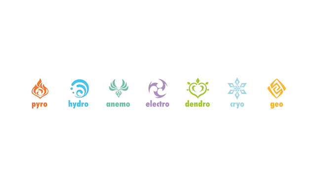

The Visions of Genshin Impact
The above images are symbols of the seven elements used in Genshin Impact.
Visions in Genshin Impact aren't actually what you see, but what elements you can use. They're like powers and not everyone in the world can use them. From my knowledge, they are gifted to one from the gods (archons). They can be used with specific weapons to a character (you can't choose it's just what the character uses by default). They can also be used to gauge elemental reactions with other elements (when used together) and can be used with specific elemental mechanisms/ puzzles in the game.
What are the types of visions?
The visions (elements) that are in Genshin Impact are as follows:
- Pyro which is fire
- Hydro which is water
- Anemo which is wind
- Electro which is lightning
- Dendro which are plants
- Cryo which is ice
- Geo which is earth
As mentioned earlier, while attacking and switching team characters, you can mix elements to cause a reaction. An example of this would be attacking with cryo (ice) and pyro (fire) It creates a melting effect on the enemies and increases damage. However, some opponents are immune to certain elements and attack styles, so it's important to strategize. Overall, combat in Genshin Impact is complex strategy is important. Then again, the point is to have fun, so play as you want!